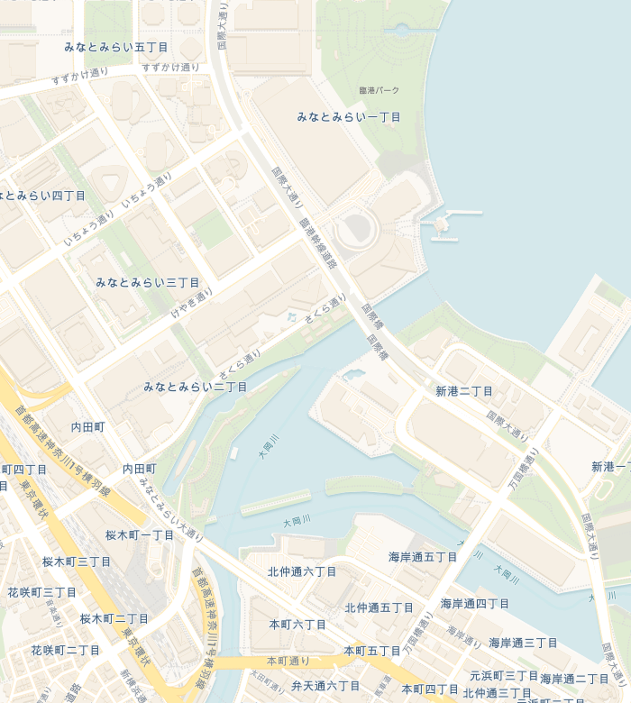

あの"サンリオFes"の会場が、まるごと学園になる。
港町みなとみらいがキャンパスになる、いちばんカワイイ文化祭。
 ハローキティ
ハローキティ
 シナモロール
シナモロール
 クロミ
クロミ
 マイメロディ
マイメロディ
 ポムポムプリン
ポムポムプリン
 ポチャッコ
ポチャッコ
あの"サンリオFes"の会場が、
今度は、学園祭になる。
「サンリオFes 2026」(6月27日・28日)を翌週にひかえたパシフィコ横浜が、ひと足お先に「サンリオ学園」のキャンパスに大変身! 昼は展示ホールの教室ブースとみなとみらいの街なかスタンプラリーをめぐって、 夜は国立大ホールでアーティストによる「後夜祭ナイトライブ」へ。 2週連続でパシフィコ横浜がサンリオ一色になる"サンリオウィーク"、その開幕を飾る初夏のフェスです。
パシフィコ横浜の展示ホールに「教室」と部活動ブースがずらり。屋根つきの屋内キャンパスだから、梅雨の時期でも一日中ゆっくりあそべます。
観覧車や商業施設など、みなとみらいの街なかに参加無料のスタンプラリーとフォトスポットが出現。港をながめる"つうがくろ"をおさんぽしよう。
一日のさいごは、国立大ホールで人気アーティストとキャラクターが共演する「後夜祭ナイトライブ」。全席指定のホールで、青春のBGMを大合唱しよう。
AREA 1
「サンリオFes 2026」の会場そのままに、広〜い展示ホールが学園の校舎に大変身。キャラクターごとの教室ブース、部活動体験、グリーティング、学食フードコート、限定グッズショップが大集合。全部屋内だから、天気を気にせず一日中あそべます。
AREA 2
クイーンズスクエアや観覧車周辺など、みなとみらいの街なかに「課外授業」スポットが点在。デジタルスタンプラリーで海の見える"つうがくろ"をめぐって、限定ノベルティをゲット。夜は観覧車がキャラクターカラーに輝く特別ライトアップも!
AREA 3
フェスのフィナーレを飾るのは、約5,000席の大ホールでの「後夜祭ナイトライブ」。昼はキャラクターステージ、日が暮れたらアーティストライブへ。全席指定の屋内ホールだから、ゆったり安心してクライマックスを楽しめます。
3つのエリアは、ぜんぶ歩いてめぐれるご近所さん。 海をながめながらの"つうがくろ"さんぽも、フェスの楽しみのひとつです♪

※ピンの位置はおおよその場所です。街なかスポットの詳細マップは開催前に公開予定♪
サンリオ学園 文化祭 プログラム(横浜校)
展示ホールのメインステージで、キャラクターたちが「開祭宣言」!教室ブースも一斉オープン。
キャンパスエリアで好きな部活に"入部"して体験しよう。グリーティングも随時開催。
学食フードコートで"購買部"風コラボパンやキャラクターメニューをどうぞ。売り切れ注意!
みなとみらいの街へおでかけ。海の見える"つうがくろ"でスタンプをあつめよう。
キャラクターたちがクラス対抗でダンスや出しものを披露。声援で"推しクラス"を応援してね。
国立大ホールのロビーでキャラクターたちがお出迎え。開演までワクワクの待ち時間。
国立大ホールで人気アーティストが登場するメインライブ。キャラクターとのコラボも…?
ホールいっぱいの光×音楽×キャラクターの演出で、一日をしめくくるエンディング。
おかえりの夜道は、みなとみらいの観覧車がキャラクターカラーに。帰り道も、まだ夢の中。
※時間割は予定です。内容・時間は変更になる場合があります。
キャラクターたちが「部長」をつとめる部活動ブースが、展示ホールのキャンパスに登場。 好きな部活に"入部"して、体験してあそぼう!
🎸 軽音部
バンド体験&リズムゲームで盛り上がる音楽ブース。後夜祭ライブ出演アーティストのスペシャル映像も先行公開!
📸 写真部
海と観覧車をバックにした"映え"フォトスポットが大集合。撮った写真はオリジナルフレーム加工して、SNSでシェアしよう。
🧁 家庭科部
キャラクターモチーフのスイーツデコ体験や、学食フードコートの限定メニュー食べくらべ。初夏のひんやりスイーツコラボも見のがせない!
🎨 美術部
みんなで完成させる巨大黒板アート企画や、痛バ・推し活グッズのデコ体験コーナー。世界にひとつの推しグッズを作ろう。
📺 放送部
フェスの様子を生配信する公開スタジオ。アナウンサー体験や、キャラクターへの公開インタビューを間近で見られるかも!
💌 生徒会
フェスの総合案内&スタンプラリーのゴール地点。街なかと教室、すべてめぐった人には"卒業証書"風の限定ノベルティを進呈♪
日が暮れたら、フェスはクライマックスへ。
「サンリオFes」の感動をそのままに、パシフィコ横浜 国立大ホールで、
人気アーティストとサンリオキャラクターが夢の共演。
約5,000席・全席指定の屋内ホールだから、天気を気にせずゆったり楽しめます。
ハローキティ、シナモロール、クロミ、マイメロディ、ポムポムプリンほか、人気キャラクターが日替わりラインナップで登場。大ホールならではのスケールで、歌って踊れるステージショーをお届けします。
いま聴きたいアーティストが集結するスペシャルライブ。キャラクターとのコラボパフォーマンスや、この日だけの光と音の演出は現地でしか見られません。
出演アーティスト第1弾は2026年4月下旬発表予定。
公式SNSのフォローをして続報を待っててね♪
展示ホール内に「学食」がテーマのフードコートが登場。キャラクターモチーフの初夏メニューが大集合の、どこか懐かしくてカワイイラインナップです。
「学園祭×港町ヨコハマ」をテーマにした描き起こしデザインのフェス限定グッズを販売。推し活にも普段使いにもぴったりなアイテムがそろいます。
キミの写真をここに
みなとみらい・タウンエリアのスタンプラリー、フォトスポット、観覧車ライトアップ観覧は入場無料で楽しめます。※一部体験・観覧車の乗車は有料です。
チケット不要でOK!パシフィコ横浜 展示ホールのキャンパスエリア(教室・部活動ブース・グリーティング・学食・グッズ)に一日入場できるチケット。中高生は学生証提示で¥900、小学生以下は無料です。
中高生は半額の¥900!キャンパス入場+国立大ホールでの後夜祭ナイトライブ(全席指定)+フィナーレショーがセットになった一日パス。中高生は学生証提示で¥3,900のスペシャルプライス!抽選販売です。
中高生は¥3,900・フェス限定特典付き4月中旬〜
dポイントクラブ会員 最速先行抽選エントリー
4月下旬〜
公式先行抽選(どなたでもエントリーOK)
5月中旬〜
一般販売(先着・枚数がなくなり次第終了)
神奈川県横浜市西区みなとみらい1-1-1(展示ホール・国立大ホール)
クイーンズスクエア横浜・観覧車周辺ほか、みなとみらいの街なか各所
※駐車場の台数には限りがあります。公共交通機関のご利用がおすすめです。会場⇔街なかはスタンプラリーを楽しみながらの移動がおすすめですよ♪
この初夏、いちばんカワイイ放課後を。
港町で、待ってるね。